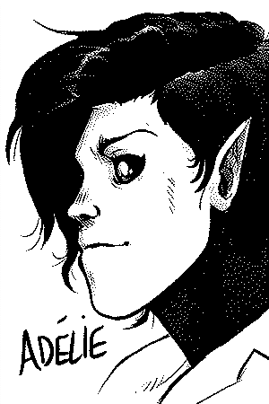
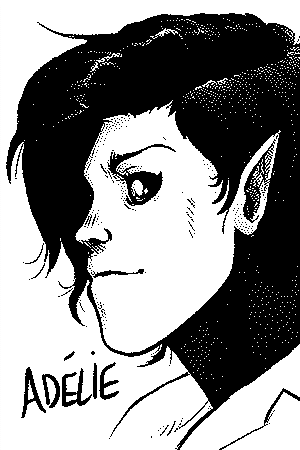
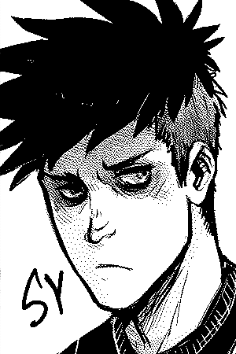
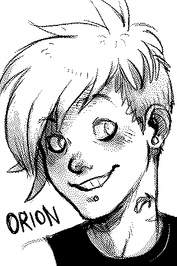
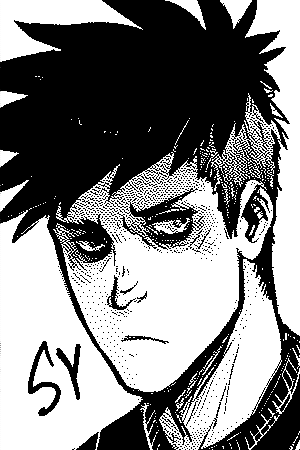
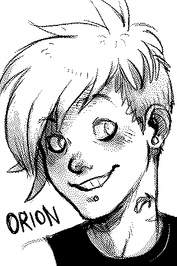

"A tale of ancient demons and monkeywrenching. It's about the city of Montore, and humans encroaching on nature, and on the descendants of an ancient race (Hegatas) who fight back. The story is a dark comedy, and follows two gangs: The Solomon's Devils (solo devs) and the Ars Goetia. Both have similar visions of the future, but bicker on how to best build/destroy the road to get there."
 

 
This website has been designed to reduce the energy use associated with accessing online content. To do this, it was made into a static website (requires less processing power), and uses an image compression technique called dithering to reduce file size. It's drawn by hand, scanned and edited digitally using open-source software (GIMP & Krita) on Linux.
Last update: 19-01-21. Updated irregularly, I live on a boat and my internet situation isn't always good. Subscribe to the comic's rss feed
License: The license applies to all the documented projects, the projects themselves and their assets. The website source code is under the MIT License. The assets, story, characters and text content are under the BY-NC-SA4.0 License.